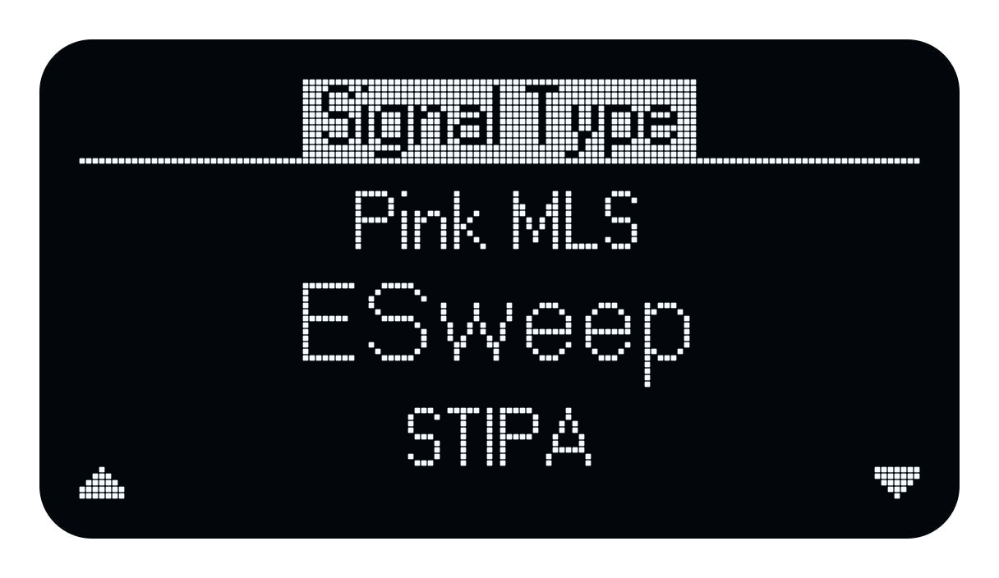
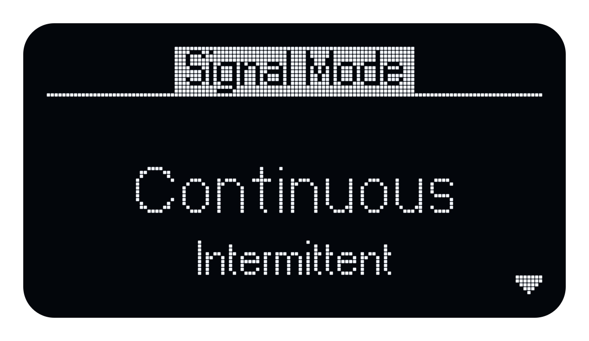
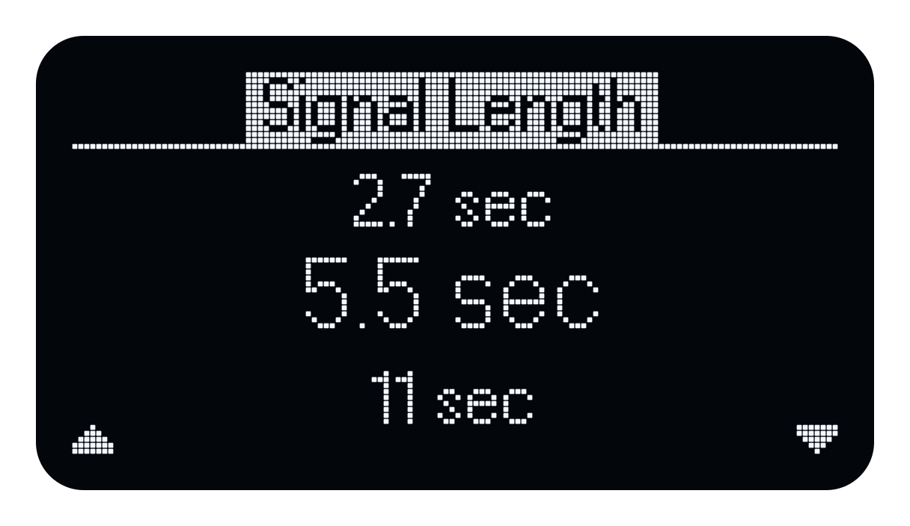
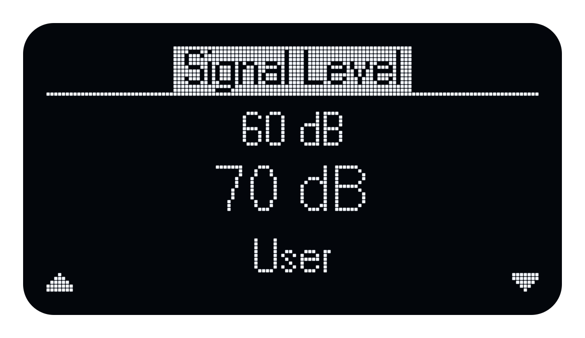
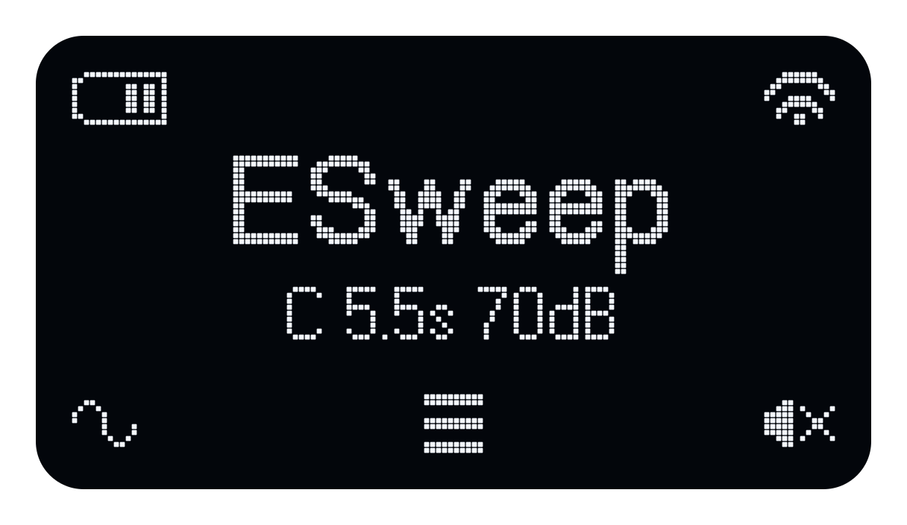

Quick Start
On this page
Basic operation
Echo is operated using three buttons:
| Button | Function |
|---|---|
| Left | Signal selection |
| Middle | Menu |
| Right | Start/stop playback |
Turn on the Echo by pressing the Middle button.
Turn the Echo off (from the home page) by pressing the Middle button 3 times in succession.
Starting playback
- Press L
-
Select a Signal Type. Press L (up arrow) or R (down arrow) to scroll through the list. The current choice appears in larger text. Press M to select it.

-
If the selected signal offers a Signal Mode, use L and R to choose Continuous or Intermittent, then press M to confirm. Continuous repeats the signal; Intermittent alternates playback and silence.

-
If prompted for Signal Length, use L and R to choose a length, then press M to confirm. The available lengths depend on the signal and mode.

-
Select the Signal Level. Use L and R to choose an option, then press M to confirm. The options depend on the signal type. If you select User, adjust the level with L to decrease it or R to increase it, then press M.

-
Press R to start playback. The right-hand icon changes to show that pressing R again will stop playback.

- Press R again to stop playback
For signal descriptions, available modes, durations and levels, see Signal Setup.